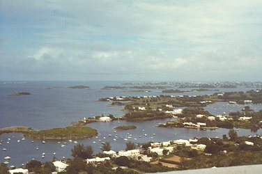

Last updated: December 24, 2000
Bermuda
|

Horseshoe Bay, Southampton Parish.

Turtle at Devil's Hole Aquarium, Flatts Village, Smiths Parish.

View from Gibbs Hill Lighthouse over Hamilton Sound.

Sunset over Harrington Sound, Smiths Parish